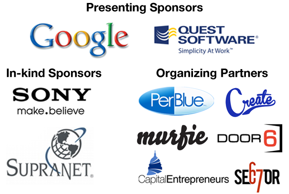

Brainsy
Winner of $500 in cash from PerBlue and 1 year of virtual co-location service from SupraNet. Brainsy is a web application that provides a better way browse Etsy.com handmade goods. You start by picking from a random assortment of products. Other products are recommended to you based on an algorithm that predicts your preferences. Brainsy was built by Corey Losenegger, Aaron Larner, and Pitt Fagan, web developers at EarthIT. Check out the demo at http://brainsy.star-man.org.
Cheesebet
Winner of 1 year Enterprise Package social media service from Ring & Klingelhoets and HD Movie Studio Plantinum software from Sony. Cheesebet.com is a social gambling website with digital cheese instead of money where the bets themselves are added and scored live during sporting events. Our goal as a team was to design, build and launch the website as one fluid process so that it could be live for the Super Bowl the next day. Right now, bets are submitted and scored by our team, but we would like to add a crowd-source component so that our users themselves can submit and score bets in real time. May the cheesiest fan win!
Requestd
Winner of the runner up glassware from SupraNet. Requestd.com is a personal search engine. Find information from your Facebook, Twitter, Picasa, and other online accounts by searching in one central place.
Atom Bomb Alarm
Winner of HD Movie Studio Plantinum software from Sony. Atom Bomb Alarm is a wake up call that also calls your friends in the event you don’t pick up or your phone is turned off. Alarms are scheduled via a simple web interface. Users also input two additional backup phone numbers. If the primary phone number doesn’t pick up, the backup phones are called and told, “Go wake your friend up! They missed their alarm!” Perfect for ultra critical moments when you need more than a traditional alarm. The service is live at www.atombombalarm.com.
Tempest RTS
Tempest is a real time strategy game in HTML5 which took inspiration from Tempest Chess, a real time chess variant. We built the core infrastructure, AI, artwork, and gameplay. It can be played at here.
iTalkBack
iTalkBack is a free text to speech application. The iTalkBack app turns the iPad into a communication device for those who need speech assistance. This iPad application replaces very expensive dedicated communication devices while providing great ease of customization that can be performed by users and/or their caretakers.
Please follow us for update and release information. http://twitter.com/#!/iTalkBack http://italkback.org/
NextGen X-10
Raffle winner of the $100 credit to Murfie.com. Many people have used and sworn at X-10 remote appliance controllers for decades. They provide plug-in modules into which you can plug lights and appliances, and then remotely control the modules (and the attached devices) from hand-held key-fobs or timer-controllers or day-night controllers. X-10 is very flakey in use, the modules fail often and are increasingly expensive. High-tech replacements (ZigBee/Lustron et all) are massively more expensive yet.
This project’s goal was to prototype a timer-controller to use with cheap, off-the-self 434 Mhz RF-controlled appliance modules. An Arduino micro-controller would be hooked to a postage-stamp-size RF transmitter; software on the Arduino would receive commands over its serial port to set timed events (a device to be turned on/off daily at a stated time) and would continuously scan its table of stored events, executing them as their time arrives. A user interface running on a laptop would be developed to create event lists and download them to the Arduino’s serial port.
Using some code snippets from prior Sector67 Arduino classes and an RF transmitter I bought from Chris on the spot, I spent about 5-6 hours developing and debugging a working prototype, using the open-source Arduino development tools and and using LiveCode (www.runrev.com) on the laptop side.
Tap It
I built a casual game for the iPhone, tentatively called “Tap It.” The gameplay works very similarly to an orignal “Bop IT!”. A sound plays telling the player what to do, and then the player must do the action fast enough to continue playing. As time goes on, the gameplay gets faster.
Y Comments
Y Comments is a small piece of Javascript that embeds comment threads on the popular Hacker News discussion website on an external page. This allows bloggers and authors on the web to submit their posts to Hacker News and then include the ensuing discussion on their own site instead of simply linking to Hacker News itself. The result is free external comment hosting (like Disqus) provided by a forum with a large and engaged community of tech professionals. More information is available at http://will.m.aier.us/ycomments.
Google Maps Atwood Mashup
The project is intended to provide a map of points of interest in the immediate vicinity of Sector 67. The map centers on Sector 67, but there is nothing preventing points of interest from being added at any location on the planet. The map can be viewed and edited by anyone who navigates to http://loganfamily.ws/atwood
Zenu Menu
The goal of our project was to make a menu and point-of-sale system on a tablet device. Each restaurant would be able to create their own distinctive menu, and provide as much data as they wanted for each item. We created a category & sub-category system that would allow diners to filter menu items down, such as “Vegetarian”. Patrons would be able to create their profiles, which would contain their payment options, accumulate loyalty rewards the restaurant might offer, and the entire table could easily split their checks for individual payment. We chose .NET & C# for our tools to create this web service. Unfortunately we were unable to finish in time. We finished creating the database, inserted 42 menu items with pictures, graphics for an example restaurant, and created back-end maintenance screens.
Magnifying Glass Stop Motion Video
Build Madison Time Lapse
The Sponsors
Contact Us
Drop us an email:team (at) sector67.org
Find us on twitter:@BuildMadison
Event hashtag:#BuildMadison